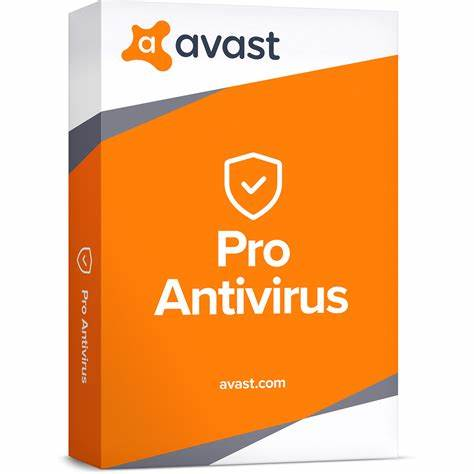

Avast Antivirus Review
Avast Antivirus Wikipedia Page
Avast Antivirus Official Download Website

Other pages:
Main Page
Avast Antivirus App Review
Gmail App Review
Youtube App Review
Avast Antivirus Features
Virus protection
Malware protection
Firewall
Anti-spam filter
Wi-Fi inspector when using public networks
Real-time protection
Browser protection
Ransomware protection
Phishing protection
Anti-tracking
Quarantine feature for suspicious files: prevents them from damaging computer.
Details
Advantages of using Avast Antivirus
Avast offers a wide range of features to protect your computer from viruses and malware.
The user interface is easy to navigate and understand.
Comes with a computer scanner than scans for malware and suspicious files on your computer.
The firewall is robust and customizable, giving users control over their network security.
Disadvantages of using Avast Antivirus
Configuring the firewall may require advanced knowledge and is hard to set up.
May slow down the computer by increasing CPU usage.
May flag some non-malicious applications as malware.
Overall
Feature
Pros
Cons
Virus protection
Highly effective
Can slow down system
Malware protection
Prevents any malware from being downloaded
May detect false positives
Firewall
Robust and customizable
May require advanced knowledge to configure